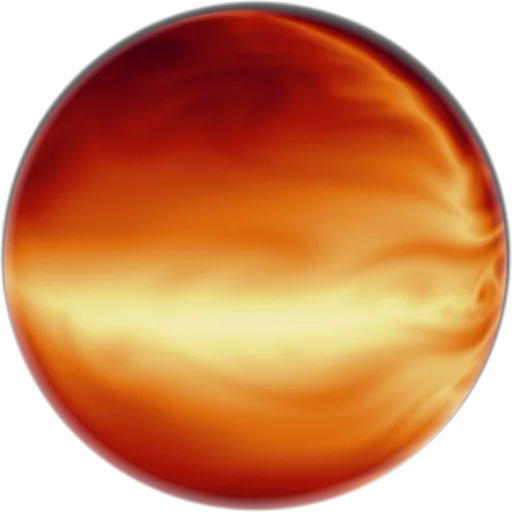
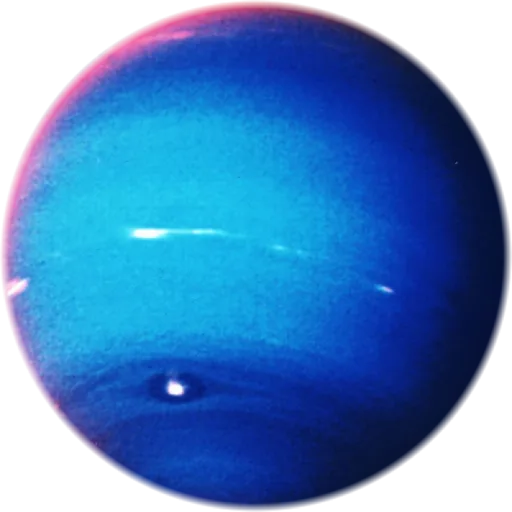
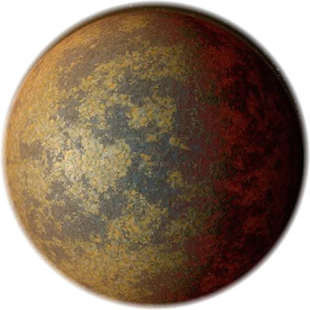
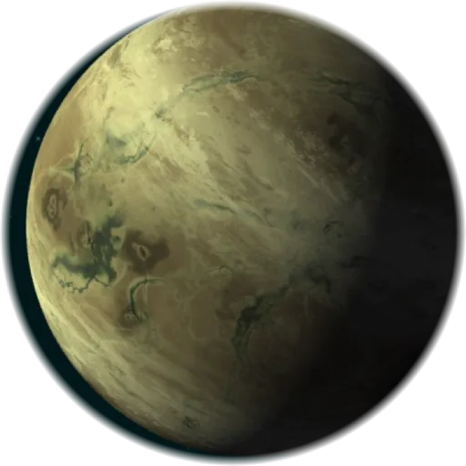
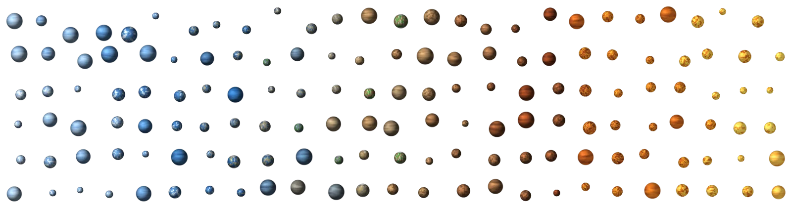

Interactive explainer
Reading the air of other worlds
We cannot visit a planet 300 light-years away, and only a few dozen exoplanets have ever been photographed directly. Still, we know what some of their skies are made of. This post explains how, and lets you try each step yourself.
01 · The census
A galaxy full of strange worlds
When the 1990s began, every planet we knew orbited our own Sun. Today we have confirmed more than 6,000 planets around other stars, and most of them look nothing like the planets of our Solar System.

Massive, hydrogen-rich worlds like Jupiter. Some orbit so close to their star that their year lasts a few days.

Icy, gaseous planets like Neptune. The most common type found so far.

Rocky worlds larger than Earth but smaller than Neptune. We have no local example at all.

Small and rocky, like Earth or Mars. Rare in the catalogue, mostly because they are the hardest to find.
Sorted by temperature

Known planets cover a huge range of temperatures, from colder than Pluto to hotter than some small stars. Here are a few of my favourites, from coldest to hottest. Click on one to read more.
02 · The hunt
Thirty years from discovery to weather report
Finding a planet and characterising it are different problems. The first thirty years were mostly about counting. Only recently did we get the tools to ask what these planets are made of.
The space-telescope era begins
Hubble was not built for exoplanets, since none were known at launch. It ended up playing a big role in this field anyway.
The first exoplanets ever found
The Arecibo radio telescope found the very first exoplanets in the strangest place imaginable: orbiting a pulsar, the collapsed core of an exploded star. Two rocky worlds, bathed in radiation. Nobody expected planets there.
The first planet around a Sun-like star
The ELODIE spectrograph caught the star 51 Pegasi wobbling, tugged by an unseen giant planet racing around it every 4.2 days. From Earth the planet never passes in front of its star, so everything we know about it comes from this wobble, which shows up as a spectral line shifting back and forth between blue and red. The discovery earned a Nobel Prize.
The first transit
For the first time, a planet was caught crossing in front of its star, dimming it by about 1.5%. This transit method became astronomy's main planet-finding tool.
Sodium in an alien sky
During transits of HD 209458 b, Hubble saw the star's sodium line get slightly deeper. Starlight was filtering through the planet's atmosphere on its way to us. This measurement founded the field this post is about.
Counting worlds by the thousand
Kepler stared at one patch of sky for years, watching 150,000 stars for tiny transit dips. It alone confirmed over 2,700 planets and taught us that planets outnumber stars.
Surveying the whole sky
TESS scans almost the entire sky for transiting planets around nearby, bright stars, exactly the targets big telescopes can study in detail.
Built to read atmospheres
A 6.5 metre gold mirror in deep space, sensitive enough to measure not just that a planet transits but how the dip changes with the colour of light. That difference is where atmospheres hide.
03 · The trick
Watch a planet cross its star
Here is a star, a planet, and a light meter. When the planet crosses the stellar disk, it blocks a tiny fraction of the light. That dip in brightness is a transit. Everything below follows from it.
04 · Inside the telescope
One stripe of starlight
In the demo you measured the dip one colour at a time. JWST records all of them at once. Its NIRISS instrument, in a mode called SOSS, stretches the star's light into a single curved stripe on the detector. Position along the stripe is wavelength: one end is the blue side of the spectrum, the other end the red side.
Below is a transit as the detector sees it. When the planet crosses its star, the whole stripe dims, but not evenly: at the wavelengths where the planet's atmosphere absorbs, it dims more. Move your cursor along the stripe to read off the wavelength.
The stripe follows the shape of a real NIRISS SOSS trace (SOSS records a second, fainter trace as well, omitted here for clarity). The atmosphere's imprint is exaggerated about three times so you can see it by eye; in real data it is smaller than the pixel-to-pixel noise.
05 · The real thing
What JWST actually sees
This is a stylised version of a real measurement: the transmission spectrum of WASP-39 b, a hot Saturn observed by JWST in its first year. Every bump is a molecule in the planet's sky, and this single spectrum shows water, sodium, carbon monoxide, carbon dioxide and even sulphur dioxide.
Each molecule absorbs at its own characteristic wavelengths, so each leaves its own pattern in the spectrum. The carbon dioxide feature at 4.3 microns was the first clear CO₂ detection on any exoplanet, and the sulphur dioxide bump is evidence of photochemistry: chemistry driven by starlight, just like ozone formation on Earth. Methane, on the other hand, was not detected.
06 · Where I come in
The hard part is trusting the answer
Signals this small put enormous weight on the analysis: subtle instrument systematics and modelling choices can shift the answer by more than the atmospheric signal itself. My PhD research at Imperial College London develops physics-based, differentiable methods to make these measurements, and the conclusions drawn from them, more trustworthy.
Telescope animations and planet renders: NASA. Spectrum stylised after public NASA/ESA/CSA/STScI releases.